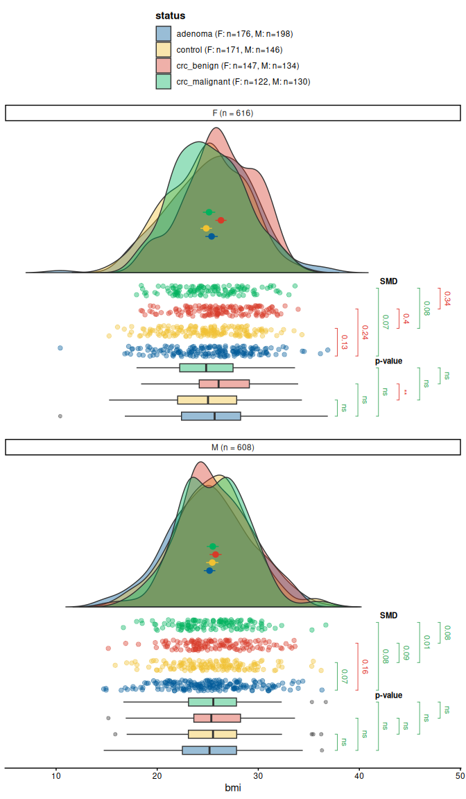

Overview
The vecmatch package implements the Vector Matching algorithm introduced in the paper Estimation of Causal Effects with Multiple Treatments: A Review and New Ideas by Lopez and Gutman (2017). This package allows users to:
- Visualize initial covariate imbalances with elegant graphics.
- Estimate treatment assignment probabilities using various regression models.
- Define the common support region.
- Perform matching across multiple treatment groups.
- Evaluate the quality of matching.
Installation
You can install the latest version of vecmatch from GitHub with:
# Install devtools if its not already installed
if(!require(devtools)){
install.packages("devtools")
library(devtools)
}
# Install the vecmatch package directly from github
devtools::install_github("Polymerase3/vecmatch")Once the package is released on CRAN, you can install it using the standard workflow: install.packages("vecmatch").
vecmatch Workflow
The vecmatch package has an exact workflow and it is advisable to follow it. It consists of 5 steps and ensures the best possible matching quality using the vector matching algorithm:
1. Initial imbalance assessment
Visualize covariate imbalances in your dataset using the raincloud() function for continuous variables and the mosaic() function for categorical variables. Both functions support grouping by up to two categorical variables (group and facet arguments) and provide standardized mean differences and significance tests.
library(vecmatch)
raincloud(
data = cancer,
y = bmi,
group = status,
facet = sex,
significance = "t_test",
sig_label_color = TRUE,
sig_label_size = 3,
limits = c(7, 48)
)
#> Warning: Removed 9 rows containing missing values or values outside the scale range
#> (`geom_flat_violin()`).
2. Estimate Generalized Propensity Scores (GPS)
Next, estimate generalized propensity scores for the treatment variable. These scores represent treatment assignment probabilities based on user-defined covariates. Use the estimate_gps() function to estimate GPS. As a result, a matrix of generalized propensity scores is returned:
formula_cancer <- formula(status ~ bmi * sex)
gps_matrix <- estimate_gps(formula_cancer,
data = cancer,
method = "vglm",
reference = "control"
)
head(gps_matrix, n = 7)
#> gps object (generalized propensity scores)
#> • Number of units: 7
#> • Number of treatments: 4
#> • Treatment column: treatment
#> • GPS probability columns: control, adenoma, crc_benign, crc_malignant
#> • Treatment levels: control, adenoma, crc_benign, crc_malignant
#> • All columns except 'treatment' store probabilities in [0, 1].
#>
#> treatment control adenoma crc_benign crc_malignant
#> 1 control 0.3347396 0.2858184 0.1622951 0.2171469
#> 2 control 0.2397453 0.3487326 0.2006854 0.2108367
#> 3 control 0.2400506 0.2885477 0.2533414 0.2180602
#> 4 control 0.2478800 0.2856531 0.2783953 0.1880716
#> 5 control 0.2398759 0.2848793 0.2568960 0.2183489
#> 6 control 0.2652354 0.2878765 0.2518512 0.1950369
#> 7 control 0.2806189 0.2888866 0.2297684 0.2007260As you can see, each row in the resulting GPS matrix contains treatment assignment probabilities for all levels of the treatment variable, summing to 1.
3. Define the Common Support Region (CSR)
The next step involves estimating the boundaries of the common support region (CSR). The lower and upper CSR boundaries define the range of propensity scores where observations are present across all treatment groups. You can calculate these boundaries by applying the csregion() function to the gps_matrix object:
csr_matrix <- csregion(gps_matrix)The csregion() function outputs a matrix of generalized propensity scores, excluding any observations that fall outside the CSR. Additionally, it provides a summary of the process in the console. You can retrieve additional attributes of the csr_matrix object using the attr() function. Details about these attributes can be found in the documentation for csregion().
4. Matching on the Generalized Propensity Scores
You can use the csr_matrix object to perform the actual matching with the vector matching algorithm using the match_gps() function. In this example, matching is performed without replacement, using a larger caliper and a one-to-one matching ratio:
matched_data <- match_gps(
csmatrix = csr_matrix,
reference = "control",
caliper = 1
)5. Assessing Matching Quality
Finally, the quality of the matching process can be evaluated using the balqual() function. This function provides both mean and maximum values for various metrics, such as the standardized mean difference, variance ratio, and r-effect size coefficient.
balqual(matched_data,
formula_cancer,
statistic = "max"
)
#>
#> Matching Quality Evaluation
#> ================================================================================
#>
#> Count table for the treatment variable:
#> --------------------------------------------------
#> Treatment | Before | After
#> --------------------------------------------------
#> adenoma | 355 | 148
#> control | 304 | 148
#> crc_benign | 279 | 148
#> crc_malignant | 249 | 148
#> --------------------------------------------------
#>
#>
#> Matching summary statistics:
#> ----------------------------------------
#> Total n before matching: 1187
#> Total n after matching: 592
#> % of matched observations: 49.87 %
#> Total maximal SMD value: 0.041
#> Total maximal r value: 0.003
#> Total maximal Var value: 1.009
#>
#>
#> Maximal values :
#> --------------------------------------------------------------------------------
#> Variable | Coef | Before | After | Quality
#> --------------------------------------------------------------------------------
#> bmi | SMD | 0.245 | 0.041 | Balanced
#> bmi | r | 0.010 | 0.003 | Balanced
#> bmi | Var | 1.101 | 1.009 | Balanced
#> sexF | SMD | 0.153 | 0.000 | Balanced
#> sexF | r | 0.006 | 0.000 | Balanced
#> sexF | Var | 1.004 | 1.000 | Balanced
#> sexM | SMD | 0.153 | 0.000 | Balanced
#> sexM | r | 0.006 | 0.000 | Balanced
#> sexM | Var | 1.004 | 1.000 | Balanced
#> bmi:sexF | SMD | 0.152 | 0.004 | Balanced
#> bmi:sexF | r | 0.007 | 0.001 | Balanced
#> bmi:sexF | Var | 1.042 | 1.004 | Balanced
#> bmi:sexM | SMD | 0.151 | 0.006 | Balanced
#> bmi:sexM | r | 0.006 | 0.001 | Balanced
#> bmi:sexM | Var | 1.023 | 1.006 | Balanced
#> --------------------------------------------------------------------------------